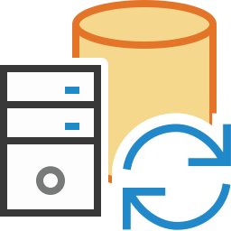

Welcome to the Database Update Framework

The framework is a code based framework for making automated database updates. It is designed to make it easy to update databases at customer site when e.g. installing a new revision of a software that depends on changes have been made to the database before the new software version can run.
The framework is compatible with the following databases; Microsoft SQL Server, IBM DB2, MySQL, Oracle, PostgreSQL and the DataFlex Embedded database.
And it is compatible with these Data Access Worldwide connectivity kit drivers;
DataFlex, MSSQLDrv.dll, DB2_Drv.dll and ODBC_Drv.dll. It is not compatible with the Pervasive driver due to its lack of SQL support. However, it should be possible to use the framework for a Pervasive database if the ODBC_DRV driver is used although this has not been tested.
Note: If the installation program was used the framework was by default installed under "C:\Projects\DbUpdateFramework"
•Watch a professionally made introduction video here. (Courtesy of Data Access Europe)
•Or watch a short funny animation (1 minute 30 secs) about the framework here or the release video here (1 minute 8 secs).
•If you are viewing the Microsoft HTML .chm help file - there is also an on-line version of this help text that might be more recent. You'll find the on-line help here.
Why would you use the Database Update Framework?
Problem description:
•A brand new version of your software is about to be released
•During development of the new software, database changes have been made; new tables and fields/columns added and the new fields needs to be initialized with default values and yet other fields were changed.
•The plan is also to to use an SQL based database (e.g. Microsoft SQL Server) at all sites.
•Thus all customer's databases needs to be changed before the new software can run.
•To use the build in DataFlex tools to make this transition is to difficult, time consuming and error prune to do at each customer site.
The solution - Use The Database Update Framework:
•You only need to make necessary changes once at the office to later run them on all customer sites
•Powerful functions help you write compact code to make even big changes. Typically one line of code for each table, field or index to change
•Test all changes at the office at your own pace to make sure it all works
•Securely locks everybody else out of the system while the database update is under way
•Deploy your program at customer site, run it, and all database changes will be done automatically and your program will then run safely
Created By
Nils Svedmyr, RDC Tools International
Visit us at: rdctools.com